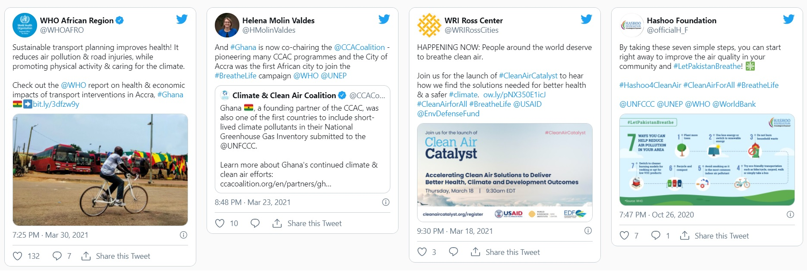
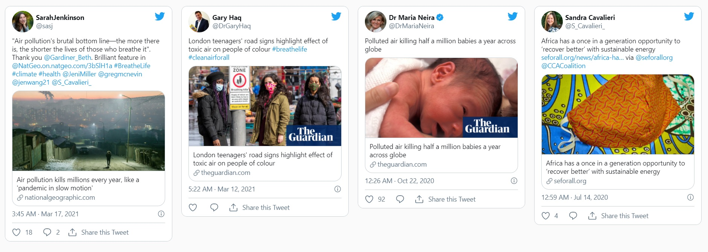

BreatheLife is a global campaign that mobilizes cities and individuals to take action on air pollution to protect our health and the planet. The campaign is led by the World Health Organization (WHO), UN Environment Programme (UNEP) and the Climate & Clean Air Coalition (CCAC).
BreatheLife combines public health and climate change expertise with guidance on implementing solutions to air pollution in support of global development goals.The BreatheLife campaign is calling for governments - city, regional and national - to commit to achieving WHO Air Quality Guidelines by 2030. Reducing air pollution to levels deemed safe by the WHO will halve the number of air pollution related deaths by 2030,
while at the same time helping to slow the rate of climate change.
Activities

Connect cities: Provide a platform for cities to share best practices and demonstrate progress in their journey to meeting WHO air quality targets by 2030
Increase monitoring: Work with municipalities to expand monitoring efforts that can keep citizens informed and facilitate more sustainable urban development
Accelerate solutions: Build demand for new solutions that are working and support municipalities in effectively implementing them in their own cities
Build public awareness: Increase support for city and national action to reduce air pollution and short-lived climate pollutants to meet health and development priorities by 2020, and the Sustainable Development Goals by 2030.
Empower individuals: Educate people about the burden air pollution poses to our health and our climate and provide meaningful ways to take action both locally and global

The director general of WHO, Tedros Adhanom, and the executive director of UN Environment, Erik Solheim, are personally calling for cities, regions and countries to join the BreatheLife Network to showcase their best practices and success in tackling air pollution. City network partners, such as ICLEI- Local Governments for Sustainability and Clean Air Asia, are helping to scale up the effort – along with sports organizations and associations – to learn about the local health impacts from air pollution and implement solutions to improve air quality.
In May 2018, the BreatheLife Challenge was launched to encourage citizens to choose to leave their cars at home and instead walk, bicycle or use public transport for the equivalent of a marathon (42.2 km/26.2 miles). The campaign is designed to motivate and inspire positive action on the part of individuals, cities, regions and countries. With the help of sponsors Pacer and Mobike, the Challenge is on track to achieve its goal of 7 million kilometers replaced, one kilometer for each of the 7 million lives lost to air pollution every year.
By bringing together communications and technical experts at all scales of governance, BreatheLife hopes to provide the political will and scientific evidence needed to unite the health and climate communities, and to make the financial case for mitigation projects that will provide multiple benefits for health, agriculture and climate.